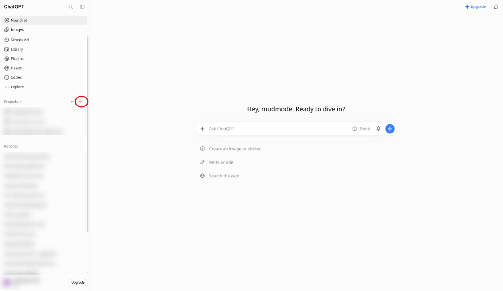
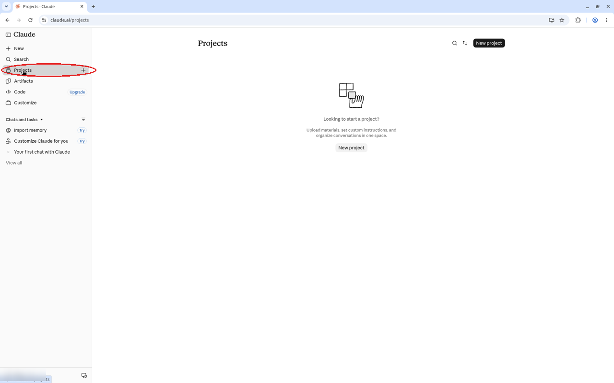
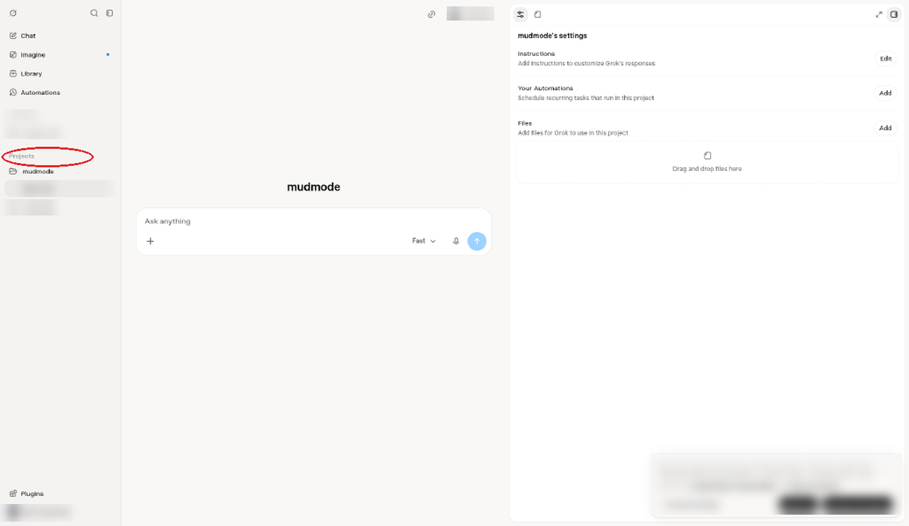
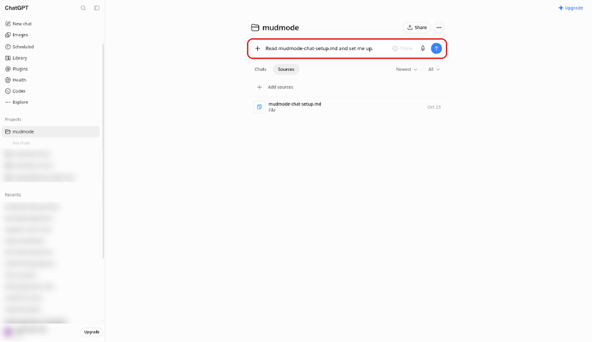

Start here
Never used an AI? Perfect.
We'll go one small step at a time, from "I don't have an AI" to your first message in your own mudmode'd AI.
- One step at a time, at your pace
- Free to start
- No experience needed
Tip: a computer is much easier than a phone for the setup part. You can read along here on your phone, though.
Do you have an AI yet?
mudmode works inside an AI chat app you already know (or are about to). Pick one. They all work, and you can switch later; the setup file is the same.
ChatGPT it is. No account yet? Make a free one, then come back to this tab.
Open chatgpt.com (opens in a new tab)Claude it is. No account yet? Make a free one, then come back to this tab.
Open claude.ai (opens in a new tab)Grok it is. No account yet? Make one on the grok.com website, then come back to this tab.
Open grok.com (opens in a new tab)Which one do you use? Tap it above (ChatGPT, Claude or Grok). Using a different chat app that has Projects? The same setup file works there too; step 4 shows the idea.
Two honest tips:
- Already have an account somewhere, or a friend who uses one? Pick that one, so you have someone to ask.
- Still stuck? Just tap any of the three. mudmode sets up the same way in each, and you can switch later.
Get mudmode
Start free and keep it as long as you like. Upgrade when you want the full book, every crew role, and kit updates in your Gumroad library. No subscriptions.
mudmode Crew
Free
Free to download and keep.
- Crew kit that works on its own
- Core safety rules
- Safety fixes as soon as they're ready
Full Kit
$29 one time
mudmode keeps learning from our own crews' real work. For 12 months, you get the kit updates we make from what it learns: dated packs in your Gumroad library, and we tell you by email when one lands. We may offer an optional renewal for more update time later. Nothing ever renews by itself.
- Everything in Crew
- The full mudmode kit and setup guide
- Ready-made setups for popular AI assistants
Buy once, keep it. 14-day money-back promise. Payments are handled by our checkout partner; see the privacy note. Results vary.
Your crew, your call. mudmode gives you the starting rules. What your crew learns from there (which lessons stay, which rules you add, what you say yes to) is up to you. Read what your AIs suggest before you keep it, and keep checking their work.
Not sure? Grab the free Crew kit. Every kit sets up the same way, so nothing you learn here is wasted. Once it's downloaded, tap Next.
Unzip it and set it up
Two short parts: open the download, then add one setup file to your AI app.
Find and unzip the download
Your receipt email has a View content button (search your inbox for mudmode). Click it, then Download. The file lands in Downloads, ends in .zip.
Windows
- Open File Explorer, click Downloads.
- Right-click the mudmode file, click Extract All...
- Click Extract. A normal folder opens.
Mac
- Open Finder, click Downloads.
- Double-click the mudmode .zip file.
- A normal folder appears right next to it.
Inside: a folder called FOR-CHAT-APPS with two files. Use mudmode-chat-lite.md; that's the only file your AI app needs to start. It's lite mode, the default: one short page of safety rules. The other file, mudmode-chat-setup.md, is full mode (all 25 rules). You can switch any time by saying "mudmode full" (see Ready for more? Go full mode in step 5). You don't have to open either file.
Add it to your AI app
Read mudmode-chat-lite.md and set me up.

Free Claude plans can have up to 5 projects. On a paid plan the project screen may look a bit different; the idea is the same: add the file, then paste the block into the project's instructions.

On a computer and like apps over websites? The kit also has an installer: on a Mac, double-click the file Install mudmode (double-click me); on Windows or Linux, run one command. The first time, macOS may block the Mac file because it came from the internet: right-click (or Control-click) it and choose Open. On macOS 15 or later, if there's no Open button, click Done, then go to System Settings > Privacy & Security and click Open Anyway. The exact commands are in hard nerd mode.
Your first idea
Setup done? Start a new chat inside your mudmode project and give it a first job. Tap an idea to copy it, then paste it in.
What to say
There are no buttons or codes. You type plain words to your AI. These are the ones that get things done.
Every day
mudmode statusA one-line verdict, then what's open, what needs you, and the next step.handoffBefore you stop. Your AI writes a note so the next chat picks up where this one stopped. In a chat app, paste the block it gives you as the first message of your next chat.mudmode reportThe daily report: what mudmode is doing, what it learned, and what you chose to share with other members.- Your OK, naming the one thingApproves that one action, one time. A broad "do it all" never covers a deploy, a store upload, sending, buying or deleting.
Change how it works
mudmode fullmudmode liteFull turns every rule on (all 25 rules). Lite is the one-page safety core plus any modules you turned on. The safety rules stay on either way, and nothing is deleted. In a chat app, your AI tells you which file to put in your project.change my mudmode settingsChange your name, time zone, what your AI must always ask about first, or your word rules.mudmode modulesIn lite mode: see the extra pieces you can turn on, and which ones are on.
Short name
mud works too, as the whole message: mud status, mud report, mud modules, and mud full, mud lite or mud quiet (for those three your AI asks you to confirm first). mudmode always works. A "mud" message is never an OK for anything. (If your computer already has a mud command, setup leaves it alone and you keep saying mudmode.)
To set up (once)
Read mudmode-chat-lite.md and set me up.Free Crew kit, chat app (lite mode, the default). Add mudmode-chat-lite.md to the project first.Read mudmode-chat-setup.md and set me up.Full Kit, chat app, or full mode in the free kit. Add mudmode-chat-setup.md to the project first.Read README.md and set me up.Free Crew kit, in an AI that works with files on your computer, opened in the kit folder.Read README-START-HERE.md and set me up.Full Kit, in an AI that works with files on your computer, opened in the kit folder.defaultsDuring setup, when your AI lists its questions with a suggested answer for each: use all the suggested answers.
Anything else, just ask in plain words, like "help me plan my week."
Ready for more? Go full mode
Lite is the start. When you want to keep learning, move up to full mode: all 25 rules in one rule book. Switching never deletes anything, and the safety rules (asking first before money, posting, sending, deploying or deleting) are on in every mode.
- In a chat in your mudmode project, type mudmode full. Your AI tells you to put mudmode-chat-setup.md in the project's files instead of mudmode-chat-lite.md.
- Add mudmode-chat-setup.md from FOR-CHAT-APPS to the project, the same way you added the lite file in step 4. Then take mudmode-chat-lite.md out of the project's files, so only one of the two is there (it stays in your folder).
- Start a new chat in the project and type Read mudmode-chat-setup.md and set me up. Press Enter.
- Answer its short questions (or type defaults). Paste the new block it gives you (it starts with Follow mudmode-chat-setup.md in every chat in this project.) into your project's instructions, replacing the old block, and save.

Want to go back? Type mudmode lite and do the same steps with mudmode-chat-lite.md.
Results vary. mudmode's rules ask your AI to ask first before money, posting, sending, deploying or deleting. AI tools can still make mistakes, so keep checking their work. Before you stop, type handoff; next time, paste the block it gives you as your first message.
You did it. Welcome to the crew.
You went from "I don't have an AI" to your own mudmode'd AI. Every day from now on: open your project, work like normal, say handoff before you stop.
hard nerd mode
Everything on one screen. Kit v1.3.4 installer.
# unzip, then run everything below from the unzipped kit folder
# macOS: in the kit folder, double-click this file in Finder (pop-up questions, then runs setup.sh)
# blocked by macOS? right-click > Open; macOS 15+: System Settings > Privacy & Security > Open Anyway
Install mudmode (double-click me).command# Windows (PowerShell 5.1+)
powershell -ExecutionPolicy Bypass -File setup\setup.ps1# macOS / Linux / Git Bash
sh setup/setup.sh# preview first, write nothing
sh setup/setup.sh --dry-run# non-interactive example (keeps your kit's default mode; add --mode lite or --mode full to choose)
sh setup/setup.sh --yes --connect claude --name "YOUR NAME" --tz "Your/TimeZone"| setup.ps1 | setup.sh | does |
|---|---|---|
-Connect claude|grok|both|none | --connect … | Write the connector for Claude Code, Grok Build, both, or none |
-Name NAME | --name | What your crew calls you |
-Tz ZONE | --tz | Your time zone |
-Mode lite|full | --mode | Free Crew kit defaults to lite, Full Kit to full; a rerun keeps your current mode |
-Target DIR | --target | Install folder (default ~/mudmode) |
-AskFirst TEXT | --ask-first | Extra things your AIs must always ask about first |
-Words TEXT | --words | Words to always or never use |
-AllowDir yes|no | --allow-dir | Opt-in: add the folder to Claude Code's permissions.additionalDirectories (dated backup first) |
-UpdateCheck on|off | --update-check | Optional update check, off unless you turn it on: when on, "mudmode status" reads one small public file on mudmodecrew.com and only tells you if a newer kit is out. It never downloads or installs anything and sends no personal info, just a normal web request |
-DryRun | --dry-run | Show what it would do, write nothing |
-Yes | --yes / -y | No prompts; keeps any existing file and tells you |
| — | --help / -h | Usage |
~/mudmode/ # your folder (or --target)
~/.claude/rules/mudmode.md # only if you connect claude or both
~/.grok/AGENTS.md # only if you connect grok or both
~/.claude/settings.json # only with --allow-dir yes, backed up first# never deletes anything; backs up first, then updates mudmode's own files (cores/modules, CORE.md on a mode switch); doesn't touch your other files
# undo: delete ~/.claude/rules/mudmode.md (or ~/.grok/AGENTS.md if setup made it)
# chat app (ChatGPT / Claude / Grok): new Project, upload FOR-CHAT-APPS/mudmode-chat-lite.md (lite, the default), then:
Read mudmode-chat-lite.md and set me up.# paste the block it returns into the project's instructions. full mode (all 25 rules): say "mudmode full", swap in mudmode-chat-setup.md, type: Read mudmode-chat-setup.md and set me up.
# file-capable agent (Claude Code, Grok Build, Codex, Cursor…), opened in the kit folder:
Read README.md and set me up.# Full Kit: Read README-START-HERE.md and set me up.
mudmode lite one-page core
mudmode full all 25 rules
turn on the <name> module
mudmode status
mudmode report
handoff before you stop
mudmode quiet no side notes
mud status short name
# short name: the whole message is "mud" plus one word: status, report, modules, full, lite, quiet. mud full / mud lite / mud quiet ask you to confirm first. "mudmode" always works. a "mud" message is never an OK for anything
# switching never deletes anything; safety rules are on in every mode